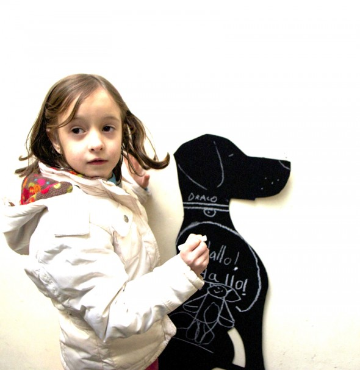

Pizarra
Puedes recortar cualquier forma con cartón y luego pintarla con pintura de pizarra.
Black board
You can cut all the forms you like out of cardboard painting them with black board color.
Tafel
Du kannst jede Form aus Karton ausschneiden, die Du möchtest und dann mit Tafelfarbe anmalen.